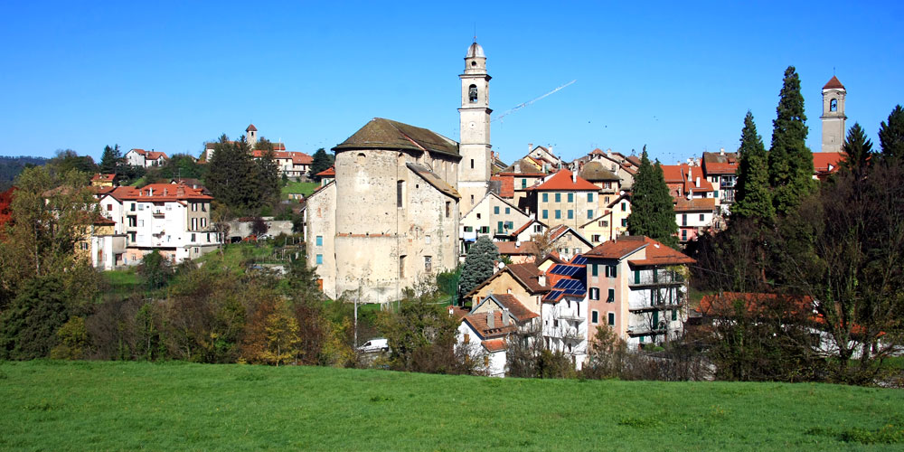

Sassello
No dia 29 de Outubro de 1971 chega o raio de sol que finalmente aquecerá os corações destes pais: nasceu Chiara que será consagrada com filial confiança à Virgem Maria.
Sassello é uma comuna italiana da região da Ligúria, província de Savona, com cerca de 1.765 habitantes. Estende-se por uma área de 100 km², tendo uma densidade populacional de 18 hab/km². Faz fronteira com Arenzano (GE), Cogoleto (GE), Genova (GE), Mioglia, Pareto (AL), Pontinvrea, Ponzone (AL), Stella, Tiglieto (GE), Urbe, Varazze.